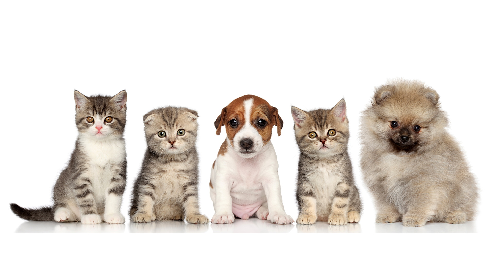

ACERCA DE NOSOTROS
¿Quiénes somos?
Debido a que cada día muchos perritos y gatitos se encuentran en estado de calle por ello buscamos cambiar esto fomentando la adopción de peluditos a través de #SoloVinoySolosefue.
● Somos una organización donde los animales rescatados puedan encontrar un hogar seguro, comida, amor y ser parte de una familia. Las mascotas son parte de nuestra familia y ponemos especial cuidado en su nutrición. Nutrimos a más de 50 mascotas en la región y colaboramos para que encuentren un nuevo hogar.
● Nos encargamos de que las mascotas en estado de vulnerabilidad sean rehabilitados y proporcionar un espacio digno durante su rehabilitación y mientras el periodo de adopción.
MISIÓN
VISIÓN

- Solidaridad
- Empatía
- Humanidad
- Amor
- Respeto
- Responsabilidad
- Justicia
- Amistad
Ser un refugio integral en la región de Ixmiquilpan, modelo a seguir y así poder replicarse en todos los Estados. Proporcionando rescate, cuidados, rehabilitación e información que contribuya a una sociedad en armonía con sus animales.